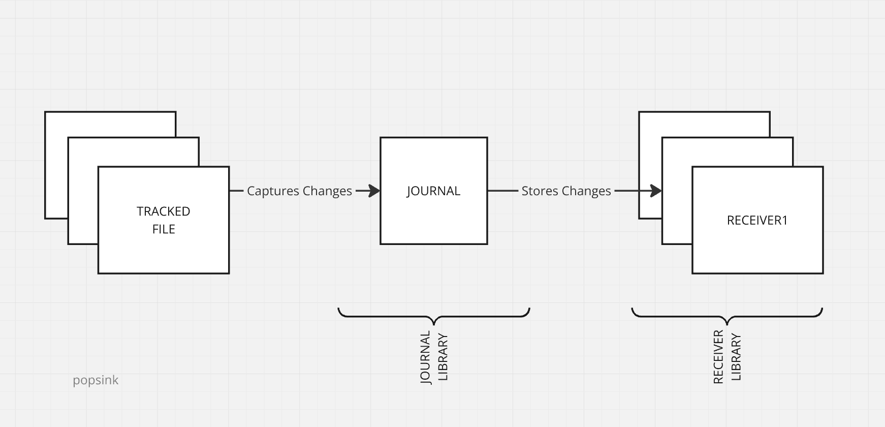

DB2 Journaling
What is journaling ?
Journaling is a mechanism used in database systems to log all data modification operations (such as INSERT, UPDATE, and DELETE) to a sequential transaction log (journal) separate from the base tables. This log provides a reliable, auditable trail of changes, supports crash recovery, and enables data consistency across system failures.
For mission-critical environments, proper journaling setup and receiver management are essential to ensure data integrity and minimize downtime.
What is Change Data Capture ? (CDC)
Change data capture is a technique involving listening to a DB journal to extract the changes since a certain point in time and apply these changes to an external system.
This is a particularly efficient way to replicate (i.e. synchronize) one database onto another. No need for a sophisticated setup on the source database, a pre-existing journal can be used as it's often the case on critical databases.
The synchronization doesn't need to periodically scan a list of tables as the journal centralizes the changes.
How is Journaling implemented on IBMi DB2 ?
DB2 tracks multiple tables with a designated journal witch itself delegates the storage to a receiver.
While it's possible to have multiple journals assigned to tables belonging to the same library (or schema), it's recommended to create a single journal for an entire DB2 instance or a single journal per schema.
A schema often reflects a single unit of work with few transactions overlapping schemas.

Configure DB2 Journal
On IBMi, everything is an object, that is a file under a library. Consider libraries as the equivalent of folders in recent systems. In the following examples, use your own library name as defined by your DB2 setup.
Use a tn5250 terminal emulator to connect to your IBMi environment and run the following commands.
1. Create a Journal Receiver
This command creates a receiver named MY_RCVER under the library POPSINK1 :
CRTJRNRCV POPSINK1/MY_RCVER
2. Create a Journal
This command creates a journal named MY_JOURNAL attached to MY_RCVER under the library POPSINK1 :
CRTJRN POPSINK1/MY_JOURNAL POPSINK1/MY_RCVER
3. Enable Journaling on source tables
For each table to replicate named ${TABLE}, run the command :
STRJRNPF POPSINK1/${TABLE} POPSINK1/MY_JOURNAL
That is, based on the tables created previously in DB2 setup :
STRJRNPF POPSINK1/CATEGORIES POPSINK1/MY_JOURNAL
STRJRNPF POPSINK1/SUPPLIERS POPSINK1/MY_JOURNAL
STRJRNPF POPSINK1/PRODUCTS POPSINK1/MY_JOURNAL
STRJRNPF POPSINK1/STOCK POPSINK1/MY_JOURNAL
STRJRNPF POPSINK1/PURCHASES POPSINK1/MY_JOURNAL
STRJRNPF POPSINK1/SALES POPSINK1/MY_JOURNAL
4. Give relevant rights to the CDC user
Your account (here POPSINK for example) needs to be allowed to read from the journal :
GRTOBJAUT OBJ(POPSINK1) OBJTYPE(*LIB) USER(POPSINK) AUT(*EXECUTE)
GRTOBJAUT OBJ(POPSINK1/*ALL) OBJTYPE(*JRNRCV) USER(POPSINK) AUT(*USE)
GRTOBJAUT OBJ(POPSINK1/MY_JOURNAL) OBJTYPE(*JRN) USER(POPSINK) AUT(*USE *OBJEXIST)
GRTOBJAUT OBJ(POPSINK1/MY_JOURNAL) OBJTYPE(*JRN) USER(POPSINK) AUT(*OBJEXIST)
GRTOBJAUT OBJ(POPSINK1/*ALL) OBJTYPE(*FILE) USER(POPSINK) AUT(*USE)
5. Switch journaling from AFTER to BOTH
By default, journaling only stores the image after the change, not the one before. This can make certain operations complex, for instance primary key updates - these cannot be handled unless both images are available.
Besides, with both images, Snowflake replication will provide more information on DELETE operations.
For each table to replicate named ${TABLE}, run the command :
CHGJRNOBJ OBJ((POPSINK1/${TABLE} *FILE)) ATR(*IMAGES) IMAGES(*BOTH)
That is, based on the tables created previously in DB2 setup :
CHGJRNOBJ OBJ((POPSINK1/CATEGORIES *FILE)) ATR(*IMAGES) IMAGES(*BOTH)
CHGJRNOBJ OBJ((POPSINK1/SUPPLIERS *FILE)) ATR(*IMAGES) IMAGES(*BOTH)
CHGJRNOBJ OBJ((POPSINK1/PRODUCTS *FILE)) ATR(*IMAGES) IMAGES(*BOTH)
CHGJRNOBJ OBJ((POPSINK1/STOCK *FILE)) ATR(*IMAGES) IMAGES(*BOTH)
CHGJRNOBJ OBJ((POPSINK1/PURCHASES *FILE)) ATR(*IMAGES) IMAGES(*BOTH)
CHGJRNOBJ OBJ((POPSINK1/SALES *FILE)) ATR(*IMAGES) IMAGES(*BOTH)
Conclusion
Journaling requires additional I/O and storage space. While not covered in this guide, monitoring and periodically deleting old journal entries is essential to save disk space.
Well Done ! you are finally ready to start replicating data from IBMi DB2 using Popsink technology.
Jump straight to our quickstart if you've installed Popsink's Snowflake IBMi connector.